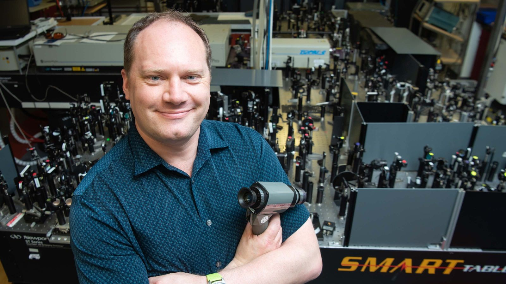
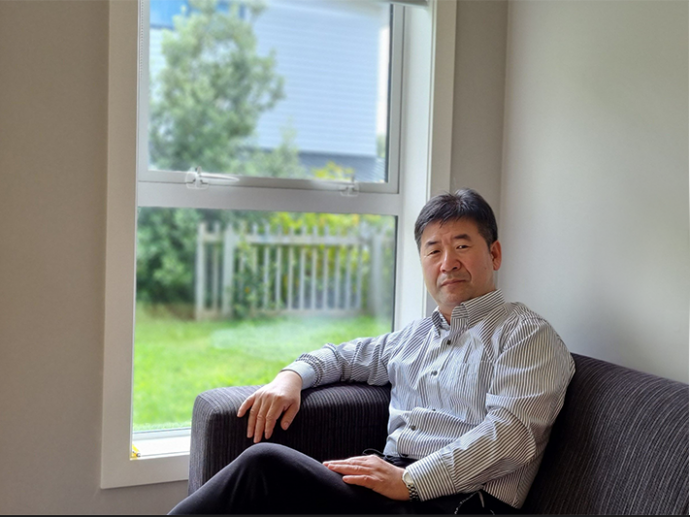
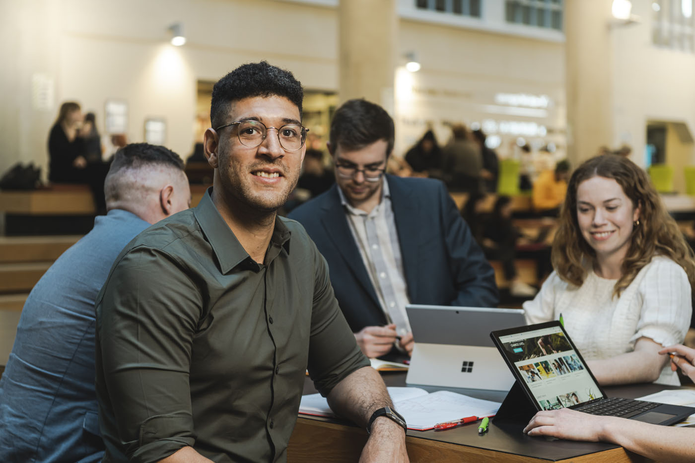
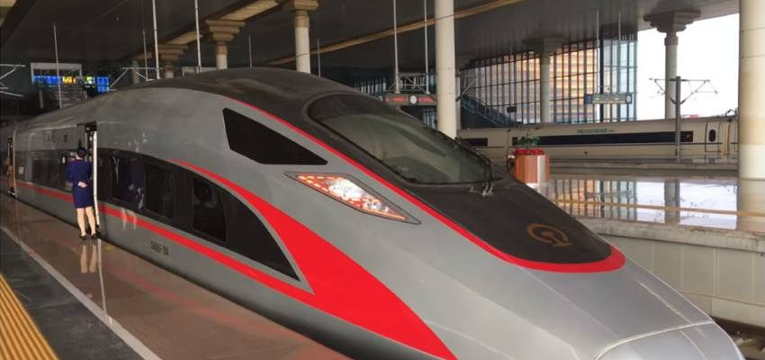
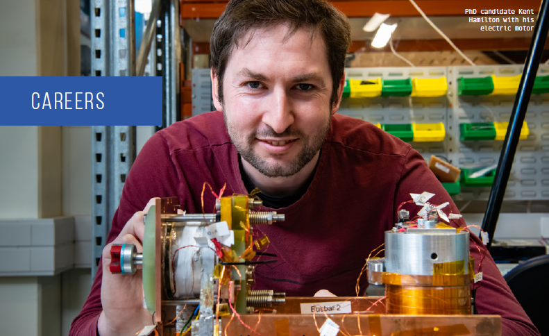
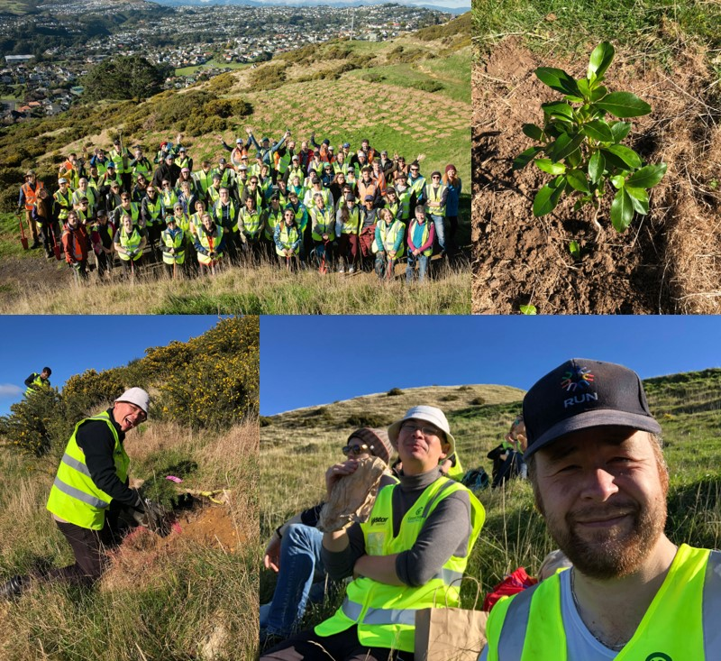

2022
New Zealand – DLR frontier Joint Research Programme funding announced
4 February, Victoria University
Spacecraft heat shielding technology and ‘green’ in-space propulsion systems at Robinson Research Institute are among eight collaborative research projects announced by MBIE and the German Aerospace Centre (DLR).
2022 Tech Bootcamp
16-21 January, Robinson Research Institute


In January, Robinson Research Institute hosted its third Tech Bootcamp for Year 12-13 Māori and Pasifika students, in conjuction with our partners at Ferrier Institute, Victoria University Faculties of Engineering and Science, Callaghan Innovation and GNS Science. The Bootcamps aim to inspire young people to pursue a career in science and engineering. For more information contact rri‑postgrad@vuw.ac.nz
High-speed bearing demonstrated
21 January, Robinson Research Institute
PhD candidate Mohammad Siamaki has demonstrated an experimental superconducting bearing operating at over 89000 rpm. This is believed to be a New Zealand record. Superconducting bearings use magnetic forces to levitate a spinning shaft in free space, thereby eliminating mechanical friction.
2021
Our Inheritance Episode 15 Efficient Aviation
17 December, Our Inheritance
Institute Senior Scientist James Storey contributes to a podcast on efficient aviation. (Note there is an error with his affliation which should be Victoria University of Wellington.)
Sci-Fi/Sci-Fact - Ironman's Arc Reactor
9 December, Radio New Zealand
James Rice is a PhD student researching superconducting power supplies for fusion energy applications at the Robinson Research Institute at Victoria University of Wellington. He gives us his scientific take on Ironman's Arc Reactor.
Building memory with magnets
3 December, Victoria University
Cloud computing is everywhere, creating a growing demand for the convenience of 24/7 secure, remote data storage and processing. But this technology comes at an increasing cost in energy demand. A team based at Victoria University of Wellington’s Robinson Research Institute and the School of Chemical and Physical Sciences has just received support from the Marsden Fund Te Pūtea Rangahau a Marsden to develop a solution for this problem.
2021 Scott Medal: Cost-effective superconductors
18 November, Royal Society of New Zealand
Dr Zhenan Jiang, a Principal Scientist at the Robinson Research Institute, has been presented the Scott Medal by Royal Society Te Apārangi for global leadership in measuring and modelling the response of superconductors, leading to cost-effective superconducting machines. Congratulations Zhenan!
Fusion powering the future
12 November, Robinson Research Institute
Fusion energy—which promises to revolutionise energy production worldwide—is the focus of a panel discussion on the final day of COP26 in Glasgow, with an international panel inviting world leaders to look towards a fusion-powered future. It's also the focus of research by PhD student James Rice, whose work at Robinson Research Institute is being part-funded by the UK’s Atomic Energy Authority.
Wellington’s University receives over $14 million under Marsden funding
3 November, Victoria University
Congratulations to Simon Granville who was awarded a Marsden Grant, Magnetism without angular momentum; High speed low power cryogenic memory, in this year's round.
Electric powered plane makes history in Cook Strait flight
1 November, One News
Our Deputy Director Professor Rod Badcock comments on the electrification of aircraft as part of coverage of the first electric flight across Cook Strait.
New technology for zero-emission electric passenger aircraft
26 October, Wellington Univentures
New Zealand researchers lead by Robinson Research Institute have teamed up with Air New Zealand and Wellington UniVentures to create technology that will make zero-emission electric passenger aircraft a reality.
Emerging Innovator Jamal Olatunji
Wellington Univentures
Dr Jamal Olatunji is a Research Engineer at Robinson Research Institute, researching the applications of superconducting magnets and machines for use in space.
Superconducting Traction Transformer
October, Transformers Magazine
This article reports key findings from the design stage of an ongoing project to develop a high-temperature superconductor (HTS) traction transformer for the Chinese Fuxing high-speed trains. The project is led by Beijing Jiaotong University and includes manufacturing partners for the Fuxing train as well as the Robinson Research Institute, Victoria University of Wellington, which has extensive experience in HTS transformer development.
This year Paihau – Robinson Research Institute is a proud supporter of EVolocity
13 October, Wellington Faculty of Engineering
EVolocity is an engineering programme where secondary school students design, build, and compete in electric vehicles. Innovation is encouraged as students strive to make their vehicle the fastest with the least drag, and able to cope with the demands of a tight street circuit. More info on EVolocity: https://evolocity.co.nz/
Evolocity Careers Special
September, Evolocity
Degrees in engineering can lead to exciting research opportunities at Paihau - Robinson Research Institute
Smart ideas funded in 2021 Endeavour Fund
8 September, Victoria University
Two `Smart Ideas' projects led by Dr Shen Chong from the Robinson Research Institute have been funded in this year's contestible funding round.
Wellington UniVentures introduces Anwarul Sifat
8 September, Wellington Univentures
Anwarul Sifat, a Research Engineer at Robinson Research Institute is working with the team at Wellington UniVentures to develop a non-contact magnetic sensor-based scheme, that can recognise the non-linear patterns of system fault signals across the eletricity distribution network.
Green Steel
12 July, Wellington Univentures
Researchers at Robinson Research Institute have demonstrated how hydrogen can be used instead of coal during the steelmaking process, potentially eliminating carbon dioxide emissions from New Zealand’s steel industry.
Planting native trees as a carbon sink
9 July, Victoria Univerity
Institute staff members Shen Chong and James Storey took part in planting 2400 native trees during the first of the University's 'Growing our future' planting days
The secret to expanding EVs - wireless charging
22 June, Newsroom
Wireless charging stations set in the pavement for vehicles to park over are closer than you think, for both cars and heavy transport vehicles.
A visit from our local Member of Parliament
26 May, Robinson Research Institute

Local MP Ginny Andersen makes a visit to see the technologies being produced in the Institute.
A visit from the Prime Minister's Chief Science Advisor
18 May, Robinson Research Institute

The Prime Minister's Chief Science Advisor Professor Dame Juliet Gerrard makes a visit to the Institute.
How to eliminate CO2 emissions from industrial materials
27 April, Radio New Zealand
Dr Chris Bumby is part of a team working on how to eliminate carbon dioxide emissions from steel-making.
Super powers
April, Kia Ora Magazine

The Robinson Research Institute’s work with superconductor engineering and electronics will shape the transport of the future.
Wellington & Manawatu Regional EVolocity Launch Event
12 April, EVolocity
Robinson Research Institute hosted the combined Wellington & Manawatu EVolocity launch event.
Materials: Fact or Fiction - Shipstone (Part 2)
7 April, Radio New Zealand
Last week Dr Chris Bumby, Principal Scientist with both the MacDiardmid Institute, and Victoria University's Robinson Institute gave us his scientific take on Shipstone from the novel 'Friday' by Robert Heinlein In the second half of that discussion, Bryan asks Chris, how much power might we be able to store in a battery?
Materials: Fact or Fiction - Shipstone (Part 1)
1 April, Radio New Zealand
Dr. Chris Bumby, Principal Scientist at Victoria University of Wellington's Robinson Institute; and Associate Investigator at the MacDiarmid Institute gives us his scientific take on Shipstone from the novel 'Friday' by Robert Heinlein.
Space: Robinson Research Institute’s next frontier
1 March, Victoria University of Wellington

Director of the Robinson Research Institute Dr Nick Long explains how his teams' expertise in electromagnetic technologies is taking them to space.